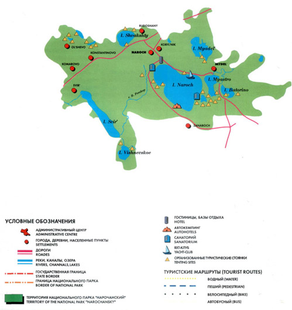

|
 Парк расположен в Мядельском, Вилейском и Сморгонском районах Минской области. Озеро Нарочь — самое большое озеро Беларуси, площадь около 80 квадратных километров. Курорт Нарочь привлекает туристов со всей страны и из-за рубежа. Озёра отличаются особой чистотой воды и разнообразием рыб. В озёрах обитают судак, лещ, окунь, щука. |
|